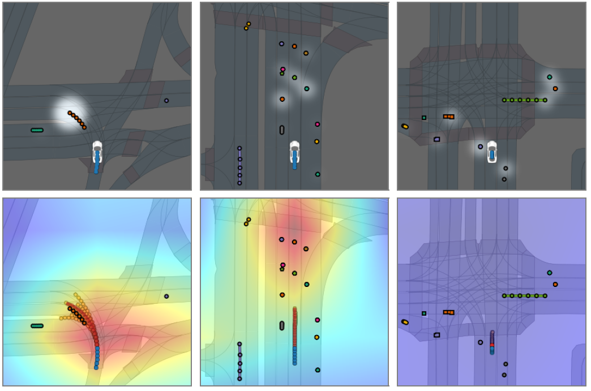

Context-Aware Timewise VAEs
for Real-Time Vehicle Trajectory Prediction
1Clemson University,
2CIMAT, A.C., Mexico,
3University of California, Riverside
IEEE Robotics and Automation Letters (RA-L)

Abstract
Real-time, accurate prediction of human steering behaviors has wide applications, from developing intelligent traffic systems to deploying autonomous driving systems in both real and simulated worlds. In this paper, we present ContextVAE, a context-aware approach for multi-modal vehicle trajectory prediction. Built upon the backbone architecture of a timewise variational autoencoder, ContextVAE's observation encoding employs a dual attention mechanism that accounts for the environmental context and the dynamic agents' states, in a unified way. By utilizing features extracted from semantic maps during agent state encoding, our approach takes into account both the social features exhibited by agents on the scene and the physical environment constraints to generate map-compliant and socially-aware trajectories. We perform extensive testing on the nuScenes prediction challenge, Lyft Level 5 dataset, and Waymo Open Motion Dataset to show the effectiveness of our approach and its state-of-the-art performance. In all tested datasets, ContextVAE models are fast to train and provide high-quality multi-modal predictions in real-time.
Downloads
Bibtex
@article{contextvae2023,
title={Context-Aware Timewise VAEs for Real-Time Vehicle Trajectory Prediction},
author={Xu, Pei and Hayet, Jean-Bernard and Karamouzas, Ioannis},
journal = {IEEE Robotics and Automation Letters},
volume = {8},
number={9},
doi={10.1109/LRA.2023.3295990},
year={2023}
}